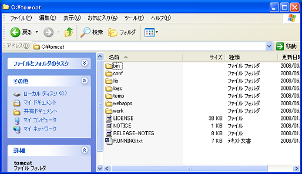
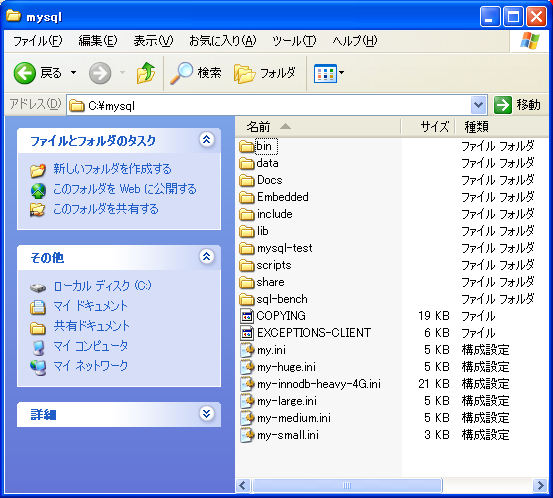
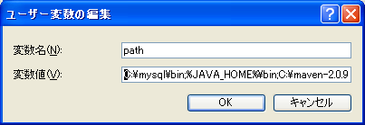

〜掲示板への道〜
0.事前準備
Tomcatのインストール
まずは、掲示板を動かす土台となるサーブレットエンジンをインストールしましょう。
この研修では、サーブレットエンジンとして Tomcat を使用します。
１．下記サイトより apache-tomcat-6.0.16.tar.gz をダウンロードしてください。
２．ダウンロードした apache-tomcat-6.0.16.tar.gz を解凍します。
３．解凍して出来たディレクトリ apache-tomcat-6.0.16 を C:\ の下に置き名前を tomcat に変更します。
この段階で以下のようなディレクトリ構成となっていることを確認してください

Tomcat の起動方法と終了方法
- 起動方法
C:\tomcat\bin\startup.bat をダブルクリックします。
- 終了方法
Ctrl+C を押します。
これ以降本ドキュメントでは、Tomcat をインストールしたディレクトリ C:\tomcat を %CATALINA_HOME% と記載します。
MySQLのインストール
次に掲示板で投稿されたデータを格納するデータベースをインストールしましょう。
この研修では、データベースとしてMySQLを使用します。
１．下記サイトより mysql-noinstall-5[1].1.23a-maria-alpha-win32.zip をダウンロードしてください。
２．ダウンロードした mysql-noinstall-5[1].1.23a-maria-alpha-win32.zip を解凍します。
３．解凍して出来たディレクトリの中に
my.iniファイルを追加します
４．解凍して出来たディレクトリ mysql-5.1.23a-maria-alpha-win32 を C:\ の下に置き名前を mysql に変更します。
この段階で以下のようなディレクトリ構成となっていることを確認してください。

４．ユーザー環境変数 PATH を設定します。
ユーザー環境変数の PATH に C:\mysql\bin を追加します。
（ユーザー環境変数の PATH が存在しない場合は新規に作成してください。）

MySQLサーバー の起動方法と終了方法
- 起動方法
コマンドラインで次のように入力します
C:\hoge>mysqld -u root --default-character-set=cp932
|
- 終了方法
コマンドラインで次のように入力します
C:\hoge>mysqladmin -u root shutdown
|
©日本インサイトテクノロジー株式会社